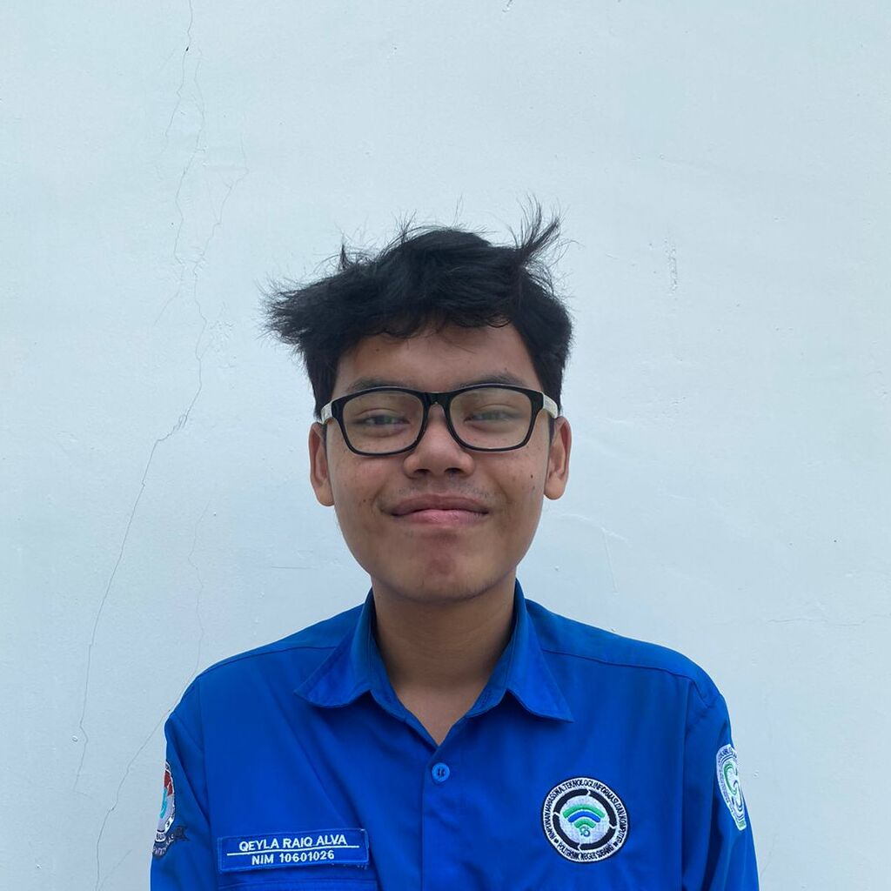
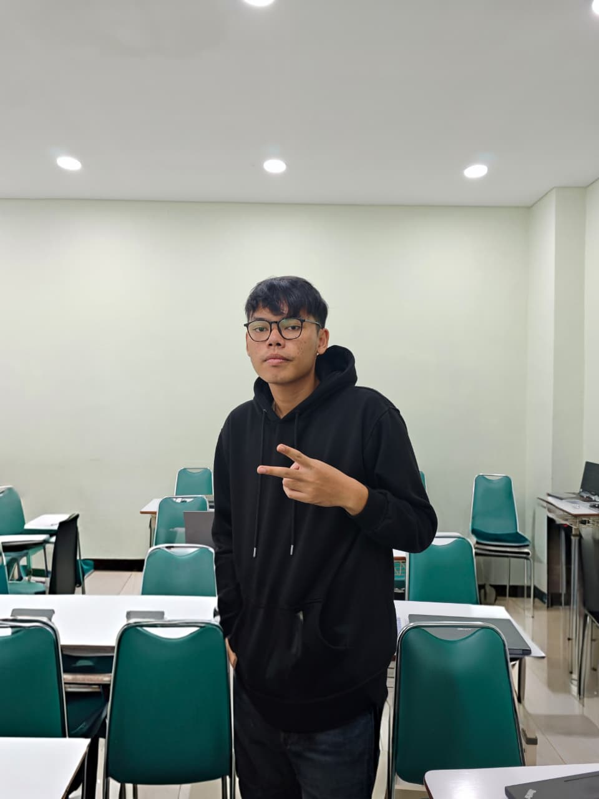
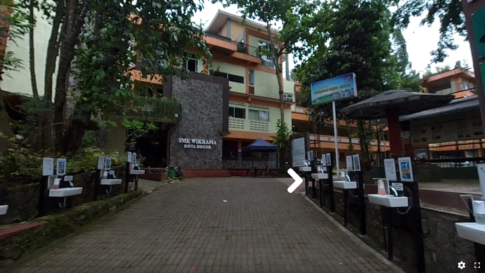
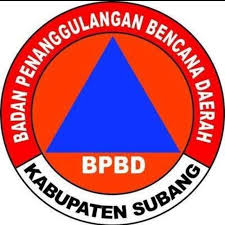

Halo! Saya Qeyla Raiq Alva, mahasiswa Teknologi Rekayasa Perangkat Lunak di Politeknik Negeri Subang. Fokus utama saya adalah Web Development, di mana saya lebih banyak mengeksplorasi sisi Backend untuk membangun arsitektur sistem yang kuat dan efisien.
Saat ini, saya juga sedang memperdalam kemampuan di bidang Mobile Development menggunakan Flutter dan React Native untuk memperluas cakupan solusi teknologi yang bisa saya ciptakan.
Dengan pengalaman di framework Laravel dan Django, serta minat besar di dunia IoT, saya senang menggabungkan logika server-side dengan perangkat keras untuk menciptakan inovasi yang berdampak nyata.
Untuk melihat lebih detail tentang perjalanan saya, silakan unduh CV saya di bawah ini!
Sertifikasi Junior Web Programmer - LSP TIK 2025
TOEIC International Score: 830/990


Sistem Informasi Geografis untuk Manajemen Data Tanggap Bencana
Berbasis Mobile, dirancang untuk meningkatkan respons dan
koordinasi dalam situasi darurat.
Dibuat Dalam Rangka Project Kolaborasi dengan BPBD Kab. Subang
untuk memenuhi kebutuhan sistem
Tertarik melihat proyek lainnya?
Kunjungi GitHub Saya